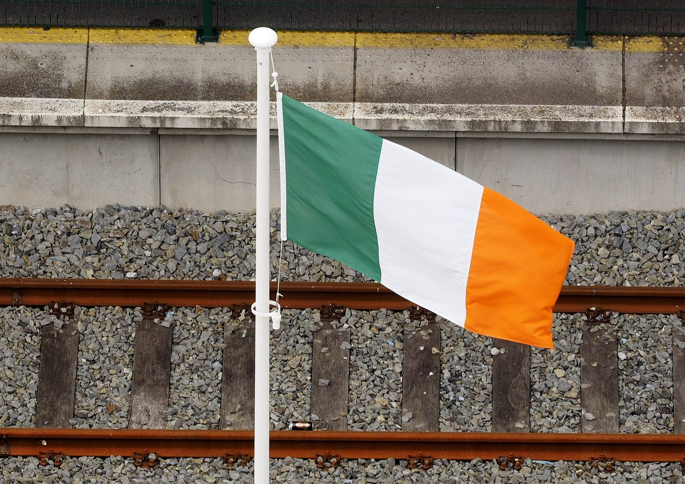
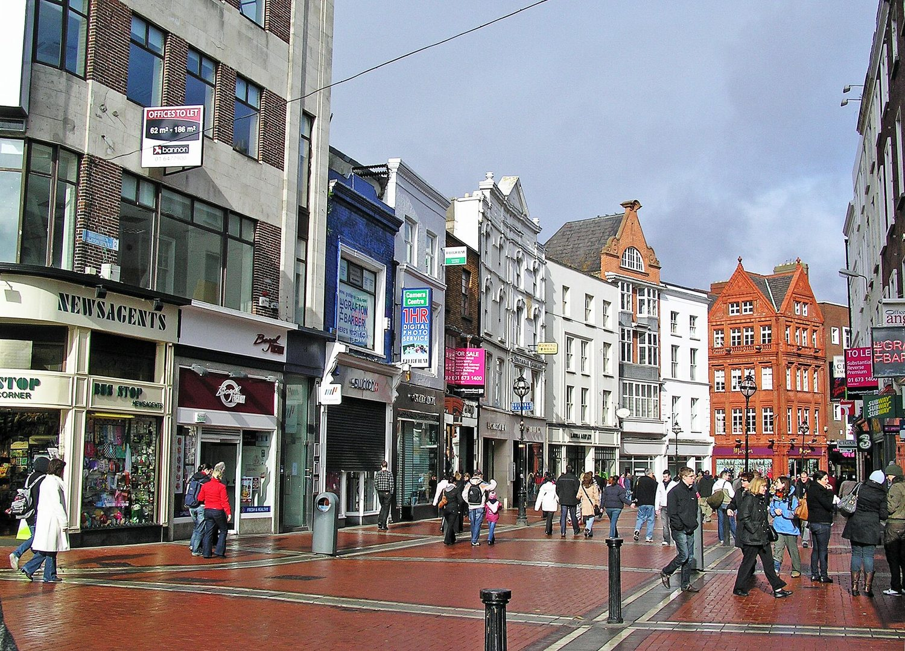
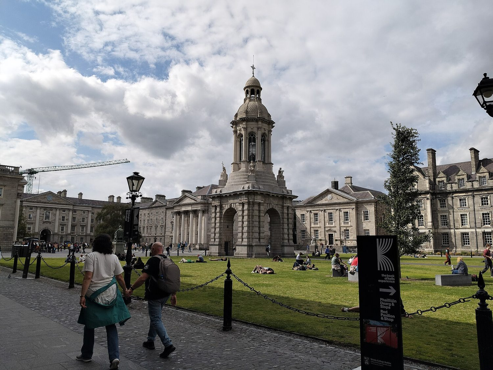
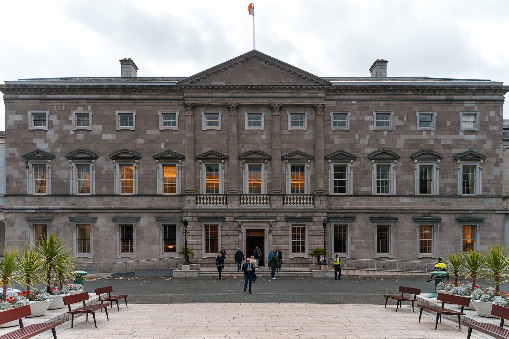

The country now
How Ireland works
The Ireland of the 2005 project was a poorer, more uniform country of under four million people. Today's is a different one: over five million, one of the most highly educated populations in Europe, and a member of the European Union for more than fifty years.

Five million people on the island, and an estimated seventy million more around the world who claim it.
on the diaspora
The flag and the harp
The tricolour is green, white and orange, and the order carries the meaning. Green stands for the older Gaelic and Catholic tradition, orange for the Protestant followers of William of Orange, and the white between them for peace. Thomas Francis Meagher brought the design back from Paris in 1848 and explained it himself: 'The white in the centre signifies a lasting truce between the orange and the green.' It became the flag of the state in 1937.
The other national emblem is older and quieter: a harp. The one used as the model is the fourteenth-century Brian Boru harp, now in the library of Trinity College Dublin, and a harp has appeared on Irish coins since the sixteenth century. It is on the Presidential standard, on the seal of the state, and — commercially if not officially — on every pint of Guinness.
Two smaller symbols turn up constantly. The shamrock is a young clover, worn on St Patrick's Day and used by the national airline and the national rugby team. St Brigid's cross is a small square woven from rushes on the first of February; it is older than Christianity on the island, and it is still made in schools every spring.
Who lives here
The census of April 2022 counted 5,149,139 people in the Republic — the first time the state's population had passed five million since 1851, when it was still falling from the famine. Add Northern Ireland's 1.9 million and the island holds about seven million people on 84,000 square kilometres.
That low figure is the scar of the 1840s. The island held over eight million people before the Great Famine; between death and emigration it lost a quarter of them within a decade, and the population went on falling for another seventy years. Emigration became the default answer to trouble, and it stayed that way into the 1980s.
The pattern has since reversed. Ireland now takes in more people than it loses, and about one in five residents was born outside the country. The diaspora remains enormous — the government's own estimate is that some seventy million people worldwide claim Irish ancestry, roughly fourteen times the population of the state itself.

Schools and universities
Education is free at primary and post-primary level and compulsory between six and sixteen. Roughly 540,000 children attend primary school and 425,000 post-primary. Irish is a required subject in most schools, though exemptions exist, and by the time a student sits the Leaving Certificate they have studied at least two languages.
The Leaving Certificate is the gate to university. Points are awarded per grade and per subject, and the Central Applications Office matches students to courses by score — so a course's cut-off point is published every August and argued about nationally. Entry to medicine or law regularly needs more than 550 of a possible 625.
Third level is largely state-funded: tuition is paid for eligible students under the Free Fees Initiative, leaving an annual student contribution of around €2,500. The oldest university is Trinity College Dublin, founded in 1592, and the sector runs from University College Dublin, Cork and Galway to Limerick and Dublin City University. Ireland has one of the highest rates of third-level qualification in the EU — over half of working-age adults, and around 63 per cent of those aged 25 to 34.

How it is governed
Ireland is a parliamentary democracy with a written constitution, Bunreacht na hÉireann, adopted by plebiscite in 1937. The President is head of state, elected directly for seven years and limited to two terms, with a largely ceremonial role. Real power sits with the Taoiseach — the prime minister — who leads a government drawn from the Oireachtas.
The Oireachtas has two houses. Dáil Éireann has 174 members, elected in 43 constituencies by proportional representation with a single transferable vote: you rank the candidates, and your vote moves on if your first choice is eliminated. Seanad Éireann has 60 senators, some elected by universities and vocational panels, eleven appointed by the Taoiseach. A general election must be held at least every five years.
Irish politics was long dominated by two parties that both descend from the opposing sides of the 1921 Treaty split — Fianna Fáil and Fine Gael. Since the 1980s, coalitions have become the norm, with a smaller left party, Sinn Féin, and a strong presence of Greens and independents. Ireland has been a member of the European Union since 1 January 1973, and the voting age is 18.

Four things worth knowing about the Ireland that exists now: its symbols, its people, its schools and its government.